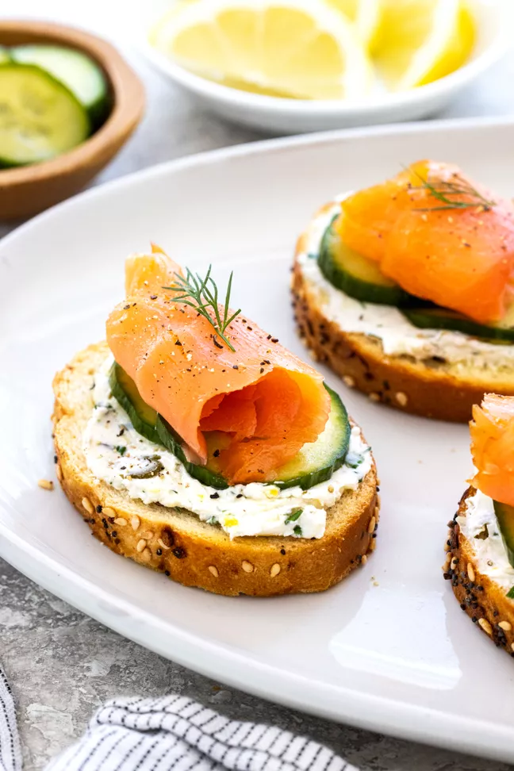

Smoked Salmon Crostini

Description
This holiday-ready appetizer is smeared with a lemon, caper, chive, and dill cream cheese spread, then topped with pickled cucumbers and thin slices of cured salmon.
Ingredients
- 1/4 cup red wine vinegar or apple cider vinegar
- 2 tablespoons honey
- 1 English cucumber, cut into about 36 1/8-inch rounds
- 1 baguette, cut into 12 1/4-inch slices
- Extra virgin olive oil, as needed for brushing
- 4 ounces cream cheese, softened
- 1 teaspoon lemon zest
- 1 teaspoon lemon juice
- 1 tablespoon capers, drained and roughly chopped
- 1 1/2 teaspoons chives, finely chopped
- 1 teaspoon dill, chopped, plus more for garnish
- 6 ounces smoked salmon, thinly sliced
- Freshly ground black pepper, for garnish
Steps
- Preheat the oven
- Pickle the cucumbers
- Toast bread slices in the oven
- Make the cream cheese spread
- Assemble the crostini